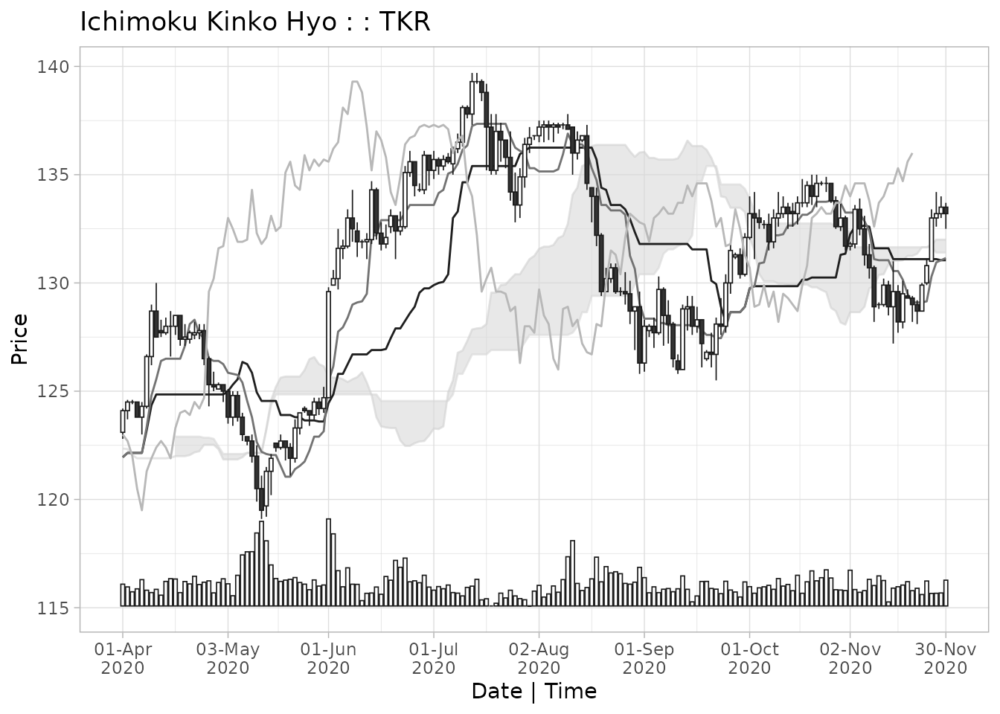

Ichimoku Kinko Hyo
Definition
The 一目均衡表 Ichimoku Kinko Hyo [cloud chart] consists of the following chart lines added to a candlestick chart:
転換線 Tenkan-sen [conversion line]: the mid-point of the highest high and lowest low for the past 9 periods (including the current period)
基準線 Kijun-sen [base line]: the mid-point of the highest high and lowest low for the past 26 periods (including the current period)
先行スパン 1 Senkou span A [leading span A]: the mid-point of Tenkan-sen and Kijun-sen plotted ahead 26 periods (including the current period)
先行スパン 2 Senkou span B [leading span B]: the mid-point of the highest high and lowest low for the past 52 periods (including the current period), plotted ahead 26 periods (including the current period)
遅行スパン Chikou span [lagging span]: the current period closing price plotted behind 26 periods (including the current period)
The 雲 kumo [cloud] is the area bounded by Senkou span A and Senkou span B (usually shaded on a chart).
Interpretation
Ichimoku Kinko Hyo can be translated as ‘one-glance equilibrium chart’. It is designed to allow the price action and market structure of financial securities to be determined visually ‘at-a-glance’.
For example in a strongly upwards-trending market, the candlesticks would be above the Tenkan-sen, which would be above the Kijun-sen, which in turn would be above the cloud, and the Chikou span may not have anything above it.
The lines and the cloud represent dynamic support and resistance zones relative to the price candles. Generally, the thicker the cloud, the tougher the support/resistance. In our previous example, if the price now reverts downwards, it can expect support first at the Kijun-sen, then the Tenkan-sen and finally the cloud itself.
When the price enters the cloud, i.e. it is between the cloud base and cloud top, it is an important area to gauge whether there is sufficient momentum for the price to break through the cloud or whether the cloud eventually provokes a reversal.
More subtle interpretations involve the Chikou span in particular and its action in relation to the cloud lines as well as the candles.
It is outside the scope of this vignette to provide a full tutorial on the use of Ichimoku Kinko Hyo.
Context
Ichimoku analysis is the latest refinement in candlestick charting techniques, which also originated from Japan back in the 18th century. Developed earlier in the 20th century by 一目山人 Ichimoku, Sanjin, the pen name of 細田吾一 Hosoda, Goichi, his work was finally published in 1969 as the seminal 「一目均衡表」 [ichimoku kinkou hyou]. It gained popularity especially after the publication of Sasaki’s 「一目均衡表の研究」 [ichimoku kinkouhyou no kenkyuu] in 1996, and is now widely-used in technical analysis worldwide.
The ichimoku time periods have traditionally been calculated as 9, 26 and 52 based on manual data analysis performed in Japan in a pre-computer age where there was a 6-day working week resulting in 26 average trading days in a month. Although this bears little relevance to the current day, the use of these time periods has persisted as an ‘industry norm’ or ‘accepted practice’. To use other periods would be meaningless in a sense as everyone uses these parameters and ‘market psychology’ can and often does create its own realities, independent of any fundamentals.
However, there is no reason for the technique not to evolve, and to reflect changing trading realities perhaps other parameters will become more relevant in the collective psychology. For this reason, the length of these periods can be freely set in the ‘ichimoku’ package. However please do so only with a strong sense of caution and note that using other periods invalidates the traditional interpretations of Ichimoku Kinko Hyo.
Finally, the use originated with daily candlesticks, and the most valid interpretation remains for daily data. However, it is equally used today for both shorter intra-day, e.g. 4-hour or hourly, and longer, e.g. weekly or monthly, charts.
A Typical Workflow
Data
ichimoku works with data frames and tabular data. The ichimoku() function handles as input xts, data.frame, data.table, tibble, matrix, and other data.frame compatible objects.
ichimoku incorporates an interface with the OANDA fxTrade API to return data for major currencies, metals, commodities, government bonds and stock indices. Please refer to the OANDA vignette.
# ichimoku can create clouds directly from OANDA data, for example:
cloud <- ichimoku(oanda("USD_JPY"))ichimoku has been designed to be fully pipeable and interfaces well with other R packages that return financial data.
As an example, the getSymbols() function from the ‘quantmod’ package assigns the data to an object but returns a text string containing the name of the object. ichimoku handles this automatically such that a chart can be created directly as per the below:
# Using R 4.1's new pipe operator:
quantmod::getSymbols("C") |> ichimoku() |> plot()
# Or equally using the 'magrittr' pipe:
quantmod::getSymbols("C") %>% ichimoku() %>% plot()Input data requirements
The requirement on the input data is minimal: a series of prices indexed by valid date-times.
# Sample OHLC price data is assigned to data frame 'TKR':
TKR <- sample_ohlc_data
head(TKR)
#> time open high low close volume
#> 1 2020-01-02 123.0 123.1 122.5 122.7 1875
#> 2 2020-01-03 122.7 122.8 122.6 122.8 1479
#> 3 2020-01-06 122.8 123.4 122.4 123.3 1792
#> 4 2020-01-07 123.3 124.3 123.3 124.1 1977
#> 5 2020-01-08 124.1 124.8 124.0 124.8 2239
#> 6 2020-01-09 124.8 125.4 124.5 125.3 1842Date-time index
Should be in a format convertible to POSIXct
ichimoku recognises indexes in columns with names containing ‘date’, ‘time’ or ‘index’, or else the row names of the dataset
Open/High/Low/Close (OHLC) data should always be used where available.
ichimoku recognises data in columns with names containing ‘open’, ‘high’, ‘low’ and ‘close’. These do not have to be nicely-formatted as in the example above and could also contain other text such as the ticker name. For further details see the section data validation
If only HLC price data is available, ichimoku will take the opening price to be the closing price of the previous period. This means that the candlesticks will not be accurate, but calculation of the cloud lines is not affected
Single series price data can also be used for producing an pseudo cloud chart if, for example, OHLC data is not available or because the price is a calculated price such as VWAP.
If ichimoku does not find HLC data in the dataset, it will proceed to seek for single series price data in columns with names containing ‘price’, ‘value’, or ‘close’
ichimoku will construct a pseudo-OHLC series from the single price. It does this by assigning the opening price to be the closing price of the previous period, and the high and low to be the max and min respectively of the opening and closing prices
As the constructed OHLC series does not contain real high/low values, the ichimoku cloud chart calculated in this way is not accurate and serves as an approximation only
Note on data retrieval: it is optimal to retrieve data starting from further back than the period being analysed. This is as certain cloud lines are calculated using up to 52 values and then plotted ahead up to 26 periods, and hence there will be only be a full chart with all of the ichimoku cloud values from the 78th observation onwards (using default cloud periods). Call ichimoku() on the full dataset and then subset the data window when plotting to ensure that there is a full cloud for the entire chart.
ichimoku()
ichimoku() is the main function of the ichimoku package. It takes the input data object and returns an ichimoku object, which inherits the classes ‘ichimoku’, ‘xts’ and ‘zoo’. For further details, please refer to the ichimoku object specification.
Optional arguments:
-
tickera ticker to identify the instrument, otherwise this is set to the name of the input object -
periods[default c(9, 26, 52)] a vector defining the length of periods used for the cloud. This parameter should not normally be modified as using other values would be invalid in the context of traditional Ichimoku analysis -
...additional arguments, for instance ‘holidays’, passed along totradingDays()for calculating the future cloud on daily data -
keep.dataset to TRUE to preserve additional data present in the input object ‘x’ as additional columns and/or attributes. Note: only columns of numeric type or type coercible to numeric are preserved, otherwise NAs are introduced.
An ichimoku object is returned by calling ichimoku() on the data:
cloud <- ichimoku(TKR)
print(cloud[100:110,], plot = FALSE, digits = 4)
#> open high low close cd tenkan kijun senkouA senkouB
#> 2020-05-19 23:00:00 122.7 122.7 121.8 122.4 -1 121.0 123.9 125.7 124.8
#> 2020-05-20 23:00:00 122.4 122.6 121.1 121.9 -1 121.0 123.9 125.7 124.8
#> 2020-05-21 23:00:00 121.9 123.7 121.7 123.3 1 121.4 123.8 125.7 124.8
#> 2020-05-24 23:00:00 123.3 124.0 123.0 124.0 1 121.5 123.8 125.7 124.8
#> 2020-05-25 23:00:00 124.2 124.3 124.0 124.1 -1 121.8 123.6 126.0 124.8
#> 2020-05-26 23:00:00 124.1 124.1 123.4 123.9 -1 122.2 123.6 126.5 124.8
#> 2020-05-27 23:00:00 123.9 124.7 123.7 124.5 1 122.9 123.6 126.6 124.8
#> 2020-05-28 23:00:00 124.5 124.7 123.9 124.2 -1 122.9 123.6 126.2 124.8
#> 2020-05-31 23:00:00 124.2 125.2 124.0 124.7 1 123.2 123.6 126.1 124.8
#> 2020-06-01 23:00:00 124.7 129.8 124.7 129.6 1 125.5 124.5 125.7 124.8
#> 2020-06-02 23:00:00 129.9 130.6 129.9 130.2 1 126.2 124.8 125.6 124.8
#> chikou cloudT cloudB
#> 2020-05-19 23:00:00 135.1 125.7 124.8
#> 2020-05-20 23:00:00 135.6 125.7 124.8
#> 2020-05-21 23:00:00 134.5 125.7 124.8
#> 2020-05-24 23:00:00 134.3 125.7 124.8
#> 2020-05-25 23:00:00 135.9 126.0 124.8
#> 2020-05-26 23:00:00 135.2 126.5 124.8
#> 2020-05-27 23:00:00 135.7 126.6 124.8
#> 2020-05-28 23:00:00 135.4 126.2 124.8
#> 2020-05-31 23:00:00 135.7 126.1 124.8
#> 2020-06-01 23:00:00 135.6 125.7 124.8
#> 2020-06-02 23:00:00 136.2 125.6 124.8A section (rows 100 to 110) of the ichimoku object is shown above. Note that print is called setting ‘plot = FALSE’ to return the data only. ichimoku objects employ a custom S3 print method which by default plots the cloud chart in the graphical device as well as returning the data to the console.
# to view chart as well as data, simply issue:
cloudAs an ichimoku object inherits the ‘xts’ and ‘zoo’ classes, all existing methods for these classes should work seamlessly. For working with ichimoku objects, please see the section re-exports.
ichimoku.ichimoku()
ichimoku() may be used on an ichimoku object to re-calculate the cloud values using the price data contained within. If ‘ticker’ is specified as an argument, this will overwrite the ticker stored in the original ichimoku object.
Calling ichimoku() on an ichimoku object containing a strategy will return the ichimoku object to its original state without the strategy unless keep.data = TRUE is specified. See the strategies vignette for information on strategies.
Preserving Data
The input object may contain additional data not required for ichimoku analysis, such as volume etc. To include such data in the ichimoku object specify keep.data = TRUE when calling ichimoku().
kumo <- ichimoku(TKR, keep.data = TRUE)
print(kumo[100,], plot = FALSE, digits = 4)
#> open high low close cd tenkan kijun senkouA senkouB
#> 2020-05-19 23:00:00 122.7 122.7 121.8 122.4 -1 121 123.9 125.7 124.8
#> chikou cloudT cloudB volume
#> 2020-05-19 23:00:00 135.1 125.7 124.8 3440This allows you to consolidate all relevant data into a single object. There is also the added benefit that it can now be plotted as a sub-plot beneath the main ichimoku cloud chart (see custom sub-plots).
Note: only numeric data or data coercible to numeric type is preserved in this way, and other types will introduce NAs. This is as ichimoku objects are based on the ‘xts’ format which essentially uses a numeric matrix to contain the data for performance reasons, and therefore does not allow multiple data types. Custom attributes set on the input object (such as a timestamp or data source) are also preserved.
Defining custom holidays
When calculating the future cloud for daily data, ichimoku() makes a call to the tradingDays() helper function to ensure that future dates fall on trading days (i.e. not weekends or holidays). By default, New Year’s and Christmas day are defined as holidays as these are for all purposes universal across markets. These defaults should be acceptable for general use.
If you wish to define other dates as non-trading days, additional custom holidays may be supplied via a ‘holidays’ argument to ichimoku() which is then passed on to the tradingDays() function.
If the relevant market trades on a 24/7 basis, the parameter noholidays can be specified. This will bypass the logic of tradingDays() and use all dates for calculating the future cloud.
# Holidays can be specified directly via a vector of dates:
ichimoku(TKR, holidays = c("2020-01-13", "2020-02-11", "2020-02-24"))
# Or via a functions that returns a vector of dates (e.g. from the 'timeDate' package):
ichimoku(TKR, holidays = timeDate::holidayLONDON())
ichimoku(TKR, holidays = timeDate::holidayNYSE())
# For a market that trades 24/7:
ichimoku(TKR, noholidays = TRUE)plot()
ichimoku offers the choice of 2 visualization systems: static (default) and interactive (reactive charts using R Shiny).
1. Static Plots
The default plot function produces static plots, which have the advantage of being easily exportable to pdf or image formats in high resolution.
Call plot() on an ichimoku object to visualize the cloud chart.
The example below demonstrates some of the arguments that can be supplied to customise the plot.
plot(cloud, window = "2020-05/", ticker = "一目均衡表", subtitle = "Sample Data Series")
The following arguments for customisation are shared across plot() and iplot():
-
window(optional) indispensable in a proper workflow.ichimoku()is run on a larger dataset than that of interest and at the visualization stage the data is subset to the window of interest. Supply as an ISO-8601 compatible range string in the format used for ‘xts’ objects, for example the range ‘2020-02-15/2020-08-15’ or ‘2020-02-15/’ (from 15 Feb 2020) or ‘/2020-08’ (until end-Aug 2020) or simply ‘2020’ to select all of the year 2020 -
ticker(optional) used to supply a different ticker to that stored in the ichimoku object, or alternatively a longer-form name or other text that will appear in the chart heading -
subtitle(optional) used to specify a subtitle to display under the chart title -
theme[default ‘original’] the following themes are also available: ‘dark’, ‘solarized’ and ‘mono’ -
strat[default TRUE] if true, the periods for which a strategy results in a market position will be shaded (if the ichimoku object contains a strategy) with the strategy printed as the chart sustitle (if not otherwise specified). See the strategies vignette for more information on working with strategies. -
type[default ‘none’] type of sub-plot to display beneath the ichimoku cloud chart, with a choice of ‘none’, ‘r’ or ‘s’ for the corresponding oscillator type, and ‘bar’ or ‘line’ for custom plots. -
custom(optional) character string (containing a regular expression) matching the column name of the variable to be displayed as sub-plot. Specifytype = 'bar'ortype = 'line', otherwise other type settings will take precedence.
plot() takes additional parameters as follows:
-
...additional arguments passed along to the print method for ‘ggplot’ objects whentype = 'none'.
Oscillators
Although Ichimoku Kinko Hyo is considered a complete charting system, it can at times be useful to pair it with an oscillator.
By specifying type = "r" or type = "s", the corresponding type of oscillator will be shown beneath the main ichimoku cloud chart.
An R-type oscillator is based on the formula for RSI or Relative Strength Index originally developed by J. Welles Wilder. This is a single line indicator with a look-back window of the ichimoku object’s medium cloud period (default 26). The 75 and 25 levels are marked on the chart to demarcate potentially over-bought and over-sold levels.
The R-type line is calculated as 100 - 100 / (1 + [26] period mean open to close gain / the absolute value of the [26] period mean open to close loss).
Note that this corresponds to the usual RSI oscillator definition, although not identical as gains/losses are calculated with reference to each period’s open rather than the previous close. Note also that the R-type oscillator does not employ a roll-forward mechanism from the initial value like the RSI as it seems that this was originally motivated in part by ease of calculation considerations, which are no longer applicable.
# To plot an R-type oscillator:
plot(cloud, type = "r")An S-type oscillator is based on the formula for the stochastic indicator, as developed by George Lane and others. This is a 2-line indicator with fast and slow lines with look-back windows corresponding to the fast and medium cloud periods respectively (default 9 and 26). The fast line is quicker to react to price changes and the slow line can either provide confirmation or signal divergence.
The fast S-type line is calculated as 100 times the ratio of the closing price minus the [9] period low to the [9] period high minus the [9] period low. The slow S-type line is calculated as 100 times the ratio of the closing price minus the [26] period low to the [26] period high minus the [26] period low.
Note the difference to the usual stochastic oscillator definition where the slow line is a 3-period moving average of the fast line.
plot(cloud, window = "2020-04-01/2020-12-01", theme = "solarized", type = "s")
Custom Sub-plots
Additional input data preserved within the ichimoku object, for example volume data, can be plotted in the sub-plot area by specifying the ‘custom’ argument. Other calculated metrics such as custom indicators can also be plotted if they are added as an additional column to the ichimoku object.
The character string supplied to ‘custom’ is a regular expression pattern that is matched to the column name and hence does not need to match exactly, nor is case considered.
To view a custom sub-plot, type must be specified as either ‘bar’ or ‘line’, otherwise the type setting will take precedence.
plot(kumo, window = "2020-04/2020-11", theme = "mono", type = "bar", custom = "volume")
On a bar chart, the bar colours correspond to the candle direction.
Further Options
Internally, ichimoku’s plot() method is a wrapper for autoplot() and extraplot(). As plot() returns the original ichimoku object (invisibly), to access the actual plot objects produced you must call those functions directly. autoplot() returns a ggplot2 object and extraplot() returns a gtable object.
2. Interactive Plots
Interactive plots require the ‘shiny’ package to be installed.
To produce an interactive plot, use ichimoku’s iplot() function. An R Shiny app will be launched, allowing full further customisation of the chart interactively, including selecting the time window, theme, chart type, custom sub-plot etc.
In a live analysis environment, as opposed to creating charts for reports, it can be preferable to work with interactive plots. This is due to the ease of being able to customise the chart coupled with easy access to the data provided by the cursor infotip:
- hover over the chart to read off data values at any given date-time
- cursor guides provide easy calibration of date-times and price levels
- select periods of interest on the timeline to subset / enlarge
iplot() takes the following additional parameters for customisation:
-
...additional parameters passed along to the ‘options’ argument ofshiny::shinyApp(). -
launch.browser[default TRUE] If TRUE, the system’s default web browser will be launched automatically after the app is started. The value of this argument can also be a function to call with the application’s URL. To use the default Shiny viewer in RStudio, please specifygetOption("shiny.launch.browser").
Implementation notes
The column names of the ichimoku object are automatically populated in a drop-down menu, and a selection can be made to view a variable as a custom sub-plot. Chart type must be set to either ‘bar’ or ‘line’, otherwise the type setting will take precedence in determining what is displayed.
The cursor infotip and guides are available for a chart type of ‘none’ but are not yet implemented for charts with sub-plots.
archive()
After completing an analysis, the resulting objects can be stored directly to disk. The function archive() combines R’s native serialisation capability with cryptographic verification of data integrity.
Archive files created by this function are stored in the native RData format for maximum portability and reliability. They may be read using the base R load() function on machines without ‘ichimoku’ installed.
Writing
archive() for write operations will take 2 arguments: the object to be written, and the file path/name of the file to be stored. A confirmation is printed to the console that the file has been written.
Reading
archive() for read operations takes a single argument: the file path/name of the file to be read. The return value of the function can be assigned to an object. A confirmation is printed to the console once the file has been read.
Data Integrity Verification
Data integrity verification is performed by the cryptographic-grade sha256 hashing algorithm from the ‘openssl’ package. If ‘openssl’ is not available, the archive function still works in all respects but without the authentication capability.
When an archive is written, the serialised object is hashed and the hash is also stored in the archive. The sha256 hash value is printed to the console as confirmation.
When an archive is read back, the sha256 hash of the restored object is checked against the hash of the original stored in the archive. If identical, a ‘data verified’ message is printed to the console along with the authenticated sha256 hash.
Supplementary Information
Data validation
ichimoku performs the following data validation steps before attempting to compute the cloud values. Failure at any step causes ichimoku() to halt.
- Searches column names of the data object for the first column containing ‘index’, ‘date’ or ‘time’ (not case-dependent). If such a column is found but the data is not convertible into POSIXct format, an error is returned
- If not found: searches in row names of the data object if present. If the row names do not contain data that is convertible into POSIXct format, an error is returned. Note: ‘xts’ objects are always indexed by a valid timestamp and ichimoku handles this automatically
- Searches for HLC price data in columns with names containing ‘high’, ‘low’ and ‘close’ (not case-dependent) respectively
If found: Searches for opening price data in a column with name containing ‘open’ (not case-dependent) and if not found sets the opening prices to be the closing prices of the previous period
If not found: Searches for a single price series in columns with names containing ‘price’, ‘value’ and ‘close’ (not case-dependent), for which a pseudo-OHLC series will be reconstructed
- Checks that the dataset is longer than the medium cloud period. If this is not the case then none of the cloud lines can be calculated
There may however still be other issues with the input data that prevent cloud values from being computed, not handled explicitly by ichimoku(). For example, if:
The date-time index is in a headerless column, or in a column where the name does not contain ‘index’, ‘date’ or ‘time’ (not case-dependent). Please rename the column to ‘index’ in such cases
The correct date-time index is in the row names, or index of an ‘xts’ object, but there are also columns that contains the word ‘index’, ‘date’ or ‘time’. Please rename the columns that do not serve as the date-time index so that the correct date-time index can be detected
There is more than one column that contains the word ‘index’, ‘date’ or ‘time’. Please either rename the columns that do not serve as the date-time index, or move the correct date-time column ahead of the other columns so that it is picked up first
HLC price data is contained in headerless columns or in columns labelled, for example, ‘Op’, ‘Hi’, ‘Lo’, ‘Cl’. Please rename the columns ‘open’, ‘high’, ‘low’ and ‘close’ in such cases
There are NA values within the price data. This will affect the algorithm calculating the cloud lines in the window immediately following such NA values. Please check the data and manually correct NA values before invoking
ichimoku()
ichimoku object specification
- Index:
-
index(object)- date-time index [POSIXct]
-
- Columns [numeric]:
-
object$open- opening price -
$high- high price -
$low- low price -
$close- closing price -
$cd- candle direction (-1 = down, 0 = flat, 1 = up) -
$tenkan- Tenkan-sen -
$kijun- Kijun-sen -
$senkouA- Senkou span A -
$senkouB- Senkou span B -
$chikou- Chikou span -
$cloudT- cloud Top (max of senkouA, senkouB) -
$cloudB- cloud Base (min of senkouA, senkouB)
-
- Attributes:
-
attributes(object)$periods- parameters used to calculate the cloud [integer vector of length 3] -
$periodicity- periodicity of the data in seconds [numeric] -
$ticker- instrument identifier [character]
-
Re-exports
For convenience, the following functions are re-exported by ichimoku:
from ‘zoo’:
-
index()to extract the index of an ichimoku object -
coredata()to extract the columns of an ichimoku object as a numeric matrix (without the date index)
from ‘xts’:
-
xts()to create an ‘xts’ object from data and a date-time index, usexts(data, index)
If modifications have been made to the price data of an ichimoku object, call ichimoku() on the modified object to re-create the object according to the correct specification.
For additional functionality, you may consider loading the ‘xts’ package to access a wide range of methods available for ‘xts’ objects, for example changing the periodicity of the data.
API modifications
Since version 0.x
- ichimoku objects created in v0.x will no longer work correctly in v1.x and later of the package
- To ensure compatibility with the ichimoku object specification v1, please upgrade to the latest package version and run
ichimoku()on previously-created objects to re-create them according to the new specification (data is preserved)
Dependencies
ichimoku currently has the following external package dependencies:
- curl - for interfacing with external APIs
- ggplot2 - the R graphics system for visualization
- gridExtra - for high-level manipulation of grid graphics objects
- jsonlite - for parsing JSON data retrieved from external APIs
- rlang - R language requirement arising from the use of ‘ggplot2’
- xts - ichimoku objects are based on the ‘xts’ format for time series
- zoo - ‘xts’ is built on ‘zoo’ technology
Compile time:
- cpp11 - provides the C++ headers for various ichimoku internal functions
Optional (provides additional features):
- bslib - for theming of ‘shiny’ applications
- keyring - for saving API keys in the system credential store
- openssl - for verifying the data integrity of archived objects
- shiny - for interactive and live visualizations
References
Sasaki, H. 佐々木 英信 (1996), 一目均衡表の研究 [ichimoku kinkouhyou no kenkyuu]. Tokyo, Japan: Toushi Radar.
Gao, C. (2021), ichimoku: Visualization and Tools for Ichimoku Kinko Hyo Strategies. R package version 1.1.6, https://CRAN.R-project.org/package=ichimoku.